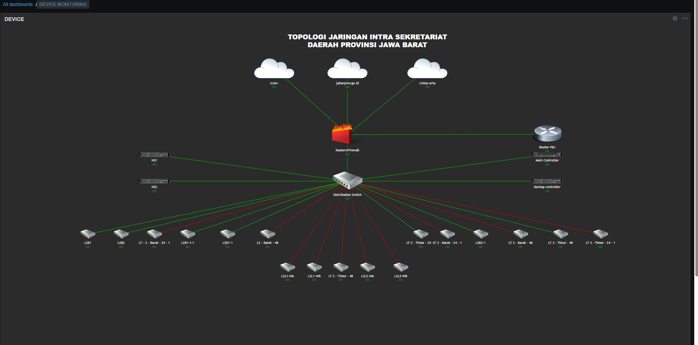
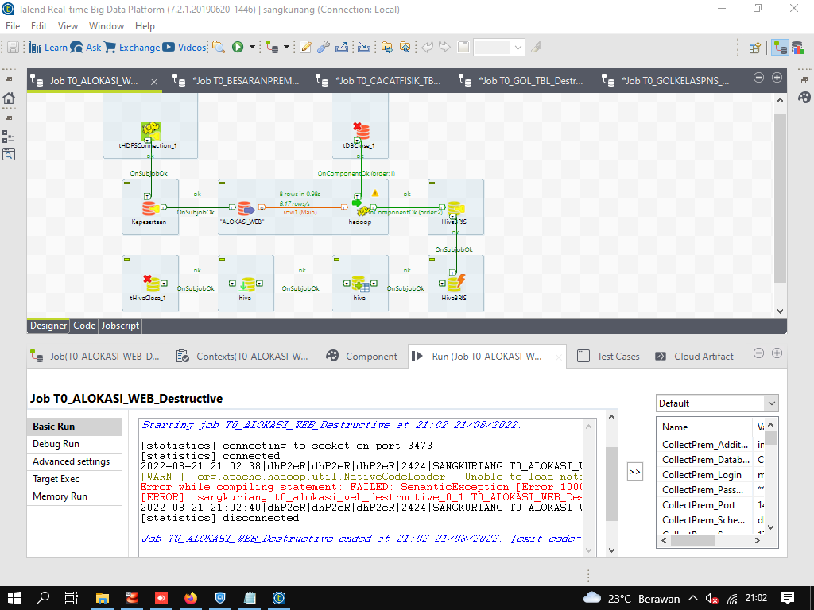

Regy Kurnia
NETWORK ENGINEERING
WORK EXPERIENCE
PT. BENTANG INSPIRA TEKNOLOGI
Network Support
2024 - Sekarang
Mengatasi Masalah masalah yang terjadi pada jaringan seperti koneksi internet yang lambat, tidak terhubung dari client ke internet, troubleshooting access point over heat, konfigurasi switch dan router mikrotik
PT. BENTANG INSPIRA TEKNOLOGI
WEB DEV & Database SUPPORT
2023 - 2024
Pembuatan Website menggunakan AngularJS dan merancang dan Menjalankan Query di SQL untuk database dan kebutuhan website
PT. BENTANG INSPIRA TEKNOLOGI
Data Engineer
2022 - 2023
Mengelola data dari SSMS (Sql Server Management Studio) untuk dimasukan ke HDFS (Hadoop Distributed File System). Menggunakan TALEND untuk mengkonversi data menjadi HiveQL.
CV.BLITZ NETWORK SOLUTION
Network Engginer
2022 - 2022
Installasi Perangkat untuk Jaringan wifi PTP (POINT TO POINT ) menggunakan perangkat Ubiquiti PowerBeam, yaitu salah satu perangkat wireless outdoor buatan Ubiquiti Networks yang digunakan untuk membangun jaringan point-to-point (PtP) atau point-to-multipoint (PtMP), dan untuk perangkat Access Point menggunakan Dlink